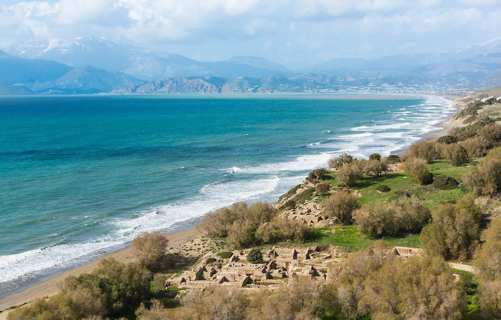
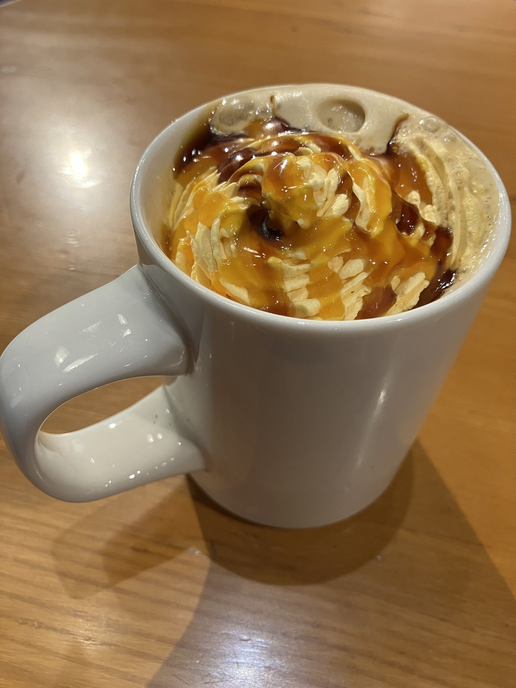
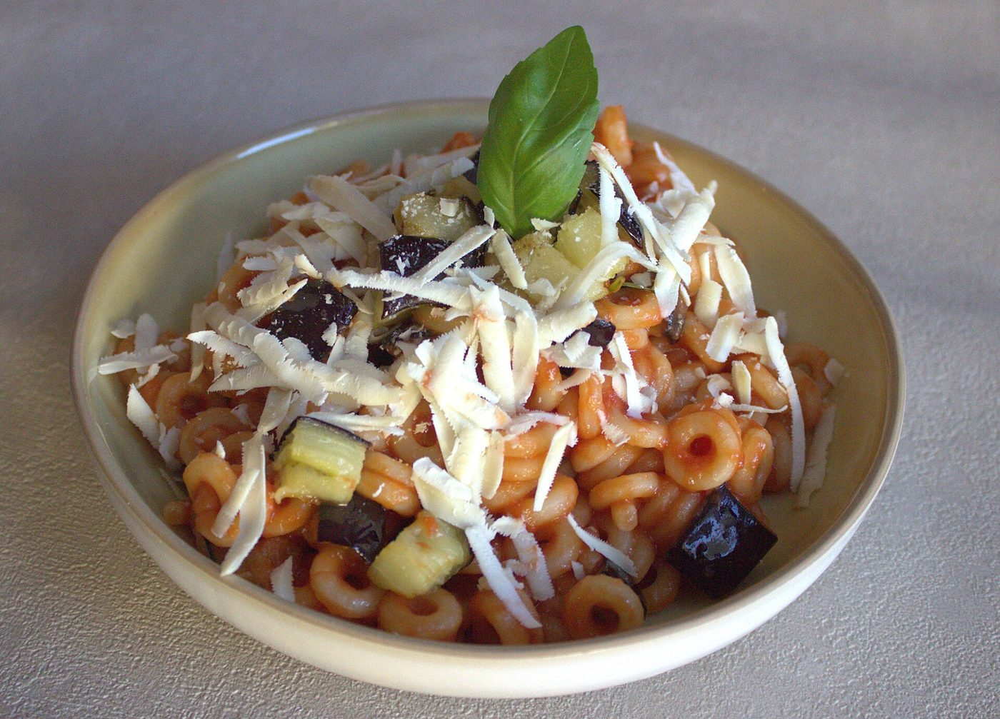

ABOUT
黒い箱の扉を開けると、海。
地元・浜坂出身の店長さんが、学生のころに「帰りに友だちと寄れるお店があればいいのに」と思っていたことが、お店の出発点だと紹介されています。ママ世代も高校生も、くつろいだり勉強したりできる場所をめざして開かれました。
外観は黒いコンテナのような佇まいですが、中は柔らかな光の落ち着いた空間。大きな窓の向こうに日本海が広がり、そのギャップも楽しみのひとつです。

ONE DAY
「ある日・いつかきっと」という意味。お客さまの一日の中に、すっと溶け込む存在でありたいという思いが込められていると紹介されています。
No.8
店長さんのお父さまのイカ釣り漁船の番号に由来すると紹介されています。お客さま・お店・漁を、近い距離でつなぎたいという考えです。
※由来・店名の意味は、地域メディアの取材記事(2025年6月)で紹介された内容にもとづきます。詳しくはお店のInstagramもご覧ください。


MENU
父が獲ったイカも、手づくりのケーキも。
取材記事などで紹介されている内容です。価格・提供日・最新の内容は準備中(来店前にお店へご確認ください)。






VOICE
こんなひとこと、こぼれそう。
以下は制作側が考えた「イメージ例」で、実在のお客さまの声ではありません。
イメージ例
窓際の席で海を眺めながら、ケーキとコーヒーでひと休み。気づけば今日も寄り道していました。
イメージ例
外は黒い箱みたいで少しドキドキ。扉を開けたら、やわらかい光と大きな窓の海にほっとしました。
イメージ例
ナポリタンのおいしさが印象的。地元のイカを使っていると聞いて、また来たくなりました。
写真クレジット
掲載写真はすべてフリー素材のイメージで、新温泉町や実際のお店・商品の写真ではありません。縮小・切り抜きなどの加工をしています。ライセンスの詳細は creativecommons.org をご覧ください。
- Komos site baie Crète / Jebulon / CC0 1.0(撮影地: 35.012,24.762)
- Window frame shadow on a curtain (Unsplash) / Steinar Engeland steinart / CC0 1.0(撮影地: 61.906,5.992)
- Sunset Key and Sailboats, Florida, 2025 / Julian Lupyan / CC0 1.0(撮影地: 不明)
- A boat on the Emre Lake in Afyonkarahisar / Raicem / CC0 1.0(撮影地: 39.106,30.444)
- Sunset over Gåseberg 3 / W.carter / CC0 1.0(撮影地: 58.359,11.519)
- Mocha Cake - Djanogly Café, Tate Britain 2026-03-24 / Andy Li / CC0 1.0(撮影地: 51.491,-0.127)
- Pumpkin latte Tullys / さえぼー / CC0 1.0(撮影地: 不明)
- Chocolate raspberry dessert / Funknendai / CC0 1.0(撮影地: 不明)
- Pasta alla Norma - Wiki Loves Sicilia / 8w9d / CC0 1.0(撮影地: 不明)
- Coffee Beans / megforce1 / CC0 1.0(撮影地: 不明)
- Beans (42182293175) / Skitterphoto / CC0 1.0(撮影地: 不明)
- A lot of coffee beans / www.Pixel.la Free Stock Photos / CC0 1.0(撮影地: 不明)
- Coffee Beans / fireskystudios.com / CC0 1.0(撮影地: 不明)